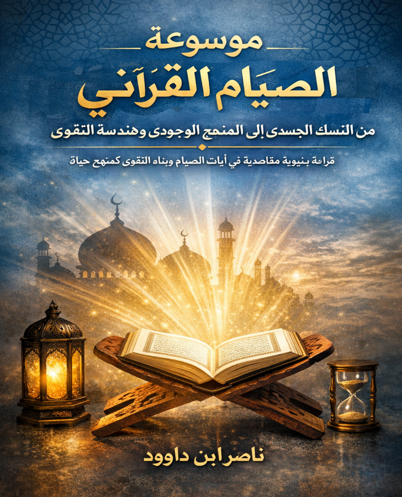

لمن هذه الموسوعة؟
- الباحثون في الدراسات القرآنية والمقاصدية
- المهتمون بتجديد الفكر الإسلامي
- طلاب العلم والدعاة الملهوفون لمعنى أعمق للصيام
- المفكرون الثائرون على قيد الطقس
- كل من يبحث عن تحويل العبادة إلى منهج وجودي
تصدير الموسوعة: نحو قيامة الوعي بالصيام
الحمد لله الذي جعل الصيام جُنّة، والقرآن بيّنة، والفرقان سبيلاً لتقويم الفطرة المستكنّة. وبعد: إن هذه الموسوعة لا تأتي لتضيف ركاماً جديداً فوق أرفف المكتبة الإسلامية التقليدية، ولا لتعيد تدوير الشروح الفقهية التي أشبعها الأقدمون بحثاً. بل هي "صرخة معرفية" و"وثيقة تصحيحية" تنبعث من قلب السؤال الجوهري: لماذا نصوم كثيراً ونرتقي قليلاً؟
نحن نعيش في زمن اختُزل فيه الصيام ليصبح "حدثاً زمنياً" يُنتظر، و"حرماناً جسدياً" يُحتمل، بينما أراده الوحي أن يكون "محركاً وجودياً" يُحدث ثورة في بنية الإنسان. تنطلق الموسوعة لتعيد بناء مفهوم الصيام من جذوره القرآنية البكر، محررة العبادة من "غيبوبة العادة" إلى "يقظة العبادة".
هندسة الموسوعة: ستة مسارات لصناعة الإنسان
١. التأسيس المنهجي وبناء الرؤية الكلية
من فقه الأوراق إلى فقه الآفاق: الصيام كمنظومة متكاملة
٢. التفكيك اللغوي والدلالي
أركيولوجيا الكلمة: الفرق بين الصوم والصيام، ورمضن كترميم فكري
٣. قراءة بنيوية لآيات رمضان
الآيات كنظام تشغيل (OS) لتطوير الوعي وإنتاج الفرقان
٤. الهندسة النفسية والتحول الداخلي
الصيام كصمام أمان داخلي، وتحويل البشرية إلى إنسية مستبصرة
٥. البعد الحضاري والزمني وليلة القدر
قراءة ثورية في الزمن والنسيء وليلة القدر كفتح معرفي
٦. النقد المعرفي والتطبيق العملي المعاصر
مواجهة الماتريكس المعرفي وتقديم دليل عملي للصائم المعاصر
منهجية البحث: البرهان الثلاثي
تعتمد الموسوعة على ثلاثة مناهج متكاملة:
- البرهان النصي: الاستناد إلى النصوص القرآنية في سياقها البنيوي.
- البرهان المقاصدي: استجلاء علل العبادة وغاياتها الوجودية.
- البرهان الحسي والعقلي: ربط الصيام بسنن الكون والنفس البشرية.
الخلاصة المركزية: الصيام هو السيادة. ليس مجرد جوع، بل وعي يبني الذات، وتمرين سيادي على ضبط المدخلات لنيل حرية المخرجات.